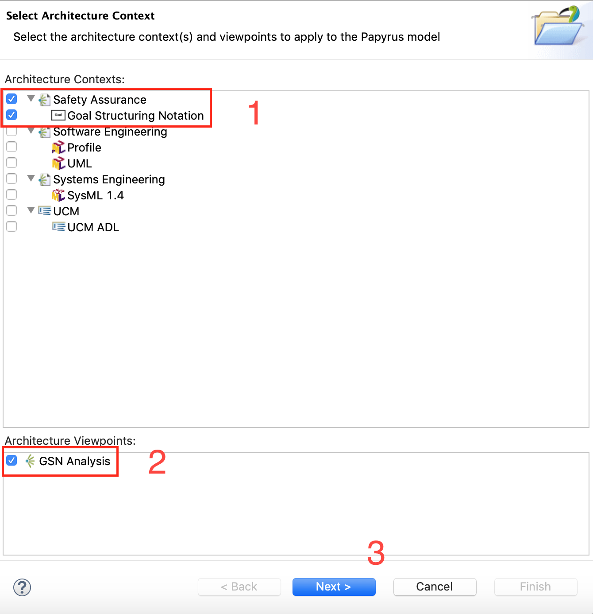
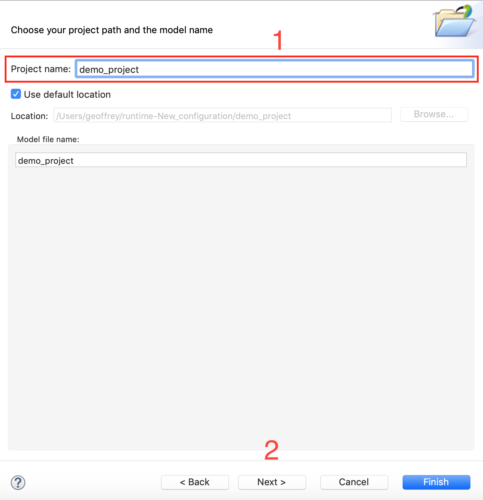
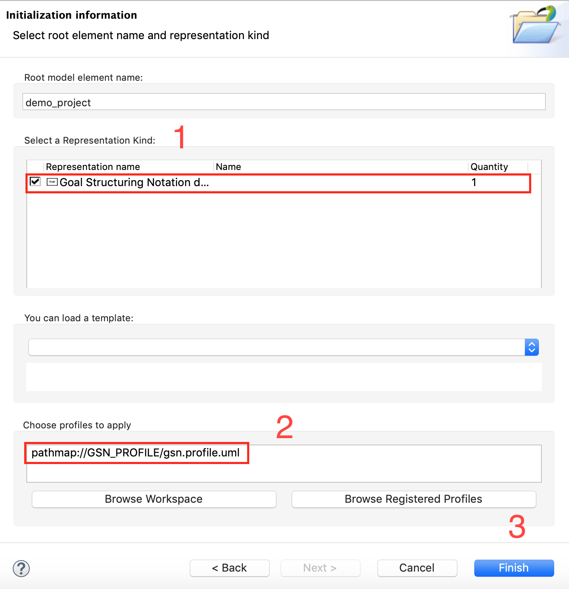

Open the "New Papyrus Project" dialog and select the "Goal Structuring Notation" architecture context and the "GSN Analysis" architecture viewpoint.
Set the project name and click "Next".
Make sure to select the "Goal Structuring Notation diagram" representation kind and to apply the registered "GSN" profile before hiting the "Finish" button.
